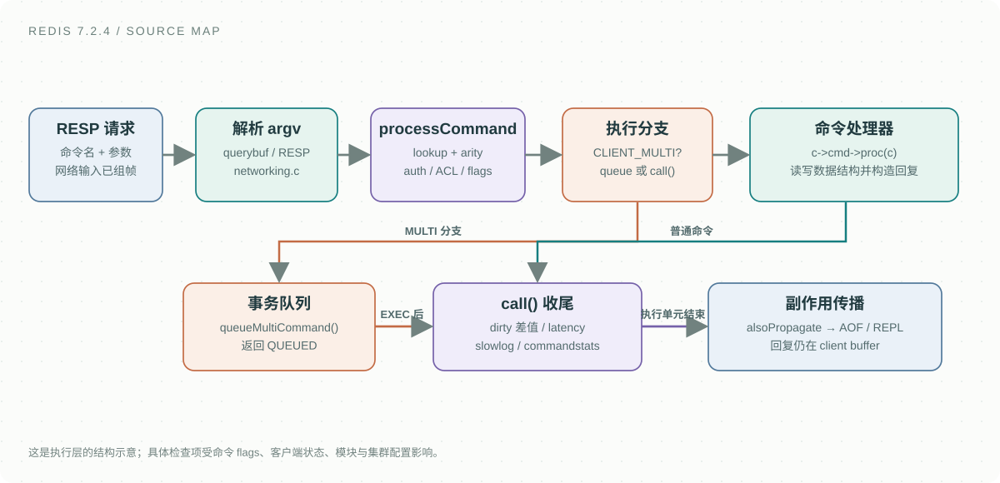
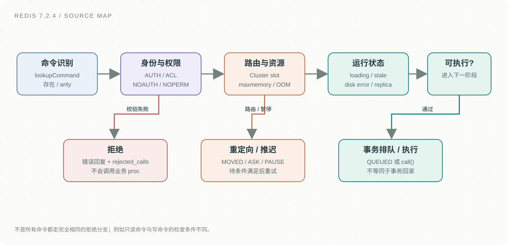
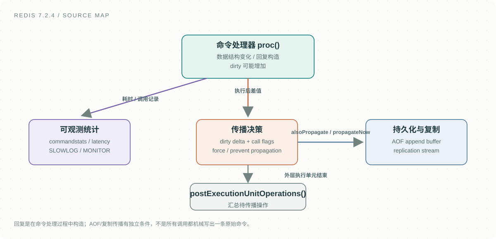

Chapter 16 / Redis 7.2.4 Source Anatomy
命令执行全流程：从 RESP 参数到 handler 与传播
沿 Redis 7.2.4 的 processCommand、命令表、ACL/Cluster/OOM 检查、MULTI 队列、call 统计与 AOF/复制传播，拆解一条请求真正的执行边界。
一条命令到达 Redis 后，真正执行之前要经过什么？
客户端发送 SET order:42 paid，网络层把 RESP 字节解析为参数数组；随后 Redis 才能判断命令是否存在、当前用户是否有权限、Cluster 是否负责该 key、内存是否允许写入、实例是否正在加载数据或处于只读副本状态。只有通过这些前置条件，服务器才会把命令交给具体命令处理器。
这意味着命令执行不是一个孤立的 setCommand() 调用。Redis 7.2.4 把控制流分成 networking.c 的输入解析、server.c 的命令分派与执行包装，以及各数据类型文件里的具体 handler。命令执行后，还可能产生慢日志、统计、MONITOR、AOF 和复制流等不同副作用。

命令查找：commands.def 不是每次请求都重新解析
Redis 7.2.4 的命令元数据由命令表构造逻辑装入字典。populateCommandTable() 遍历 redisCommandTable，将命令全名及命令结构加入 server.commands 与 server.orig_commands。请求到达时，lookupCommandLogic() 通过字典找到基础命令；若命令有子命令，再在子命令字典中继续查找。
客户端请求的解析在 networking.c 的 processInputBuffer()、processMultibulkBuffer() 等函数中完成。一个容易误读的文件是 resp_parser.c：Redis 7.2.4 该文件实现的是解析 Redis 自身生成的回复（例如 RM_Call / Lua redis.call() 的返回值），并不是网络客户端请求的主解析器。它的注释也明确说明该解析器不适合解析不可信用户输入。
/* Redis 7.2.4：控制流示意，不是完整实现 */
processInputBuffer(client):
parse RESP request -> c->argv / c->argc
processCommandAndResetClient(c)
processCommand(c):
moduleCallCommandFilters(c)
c->cmd = lookupCommand(c->argv, c->argc)
commandCheckExistence(c)
commandCheckArity(c)
... permission / state checks ...命令名查找与 key 参数识别也是两件事。Cluster 路由、ACL key 权限和命令统计依赖命令元数据里的 key specs / flags；并不是把 argv[1] 永远当作唯一 key。像 MGET、RENAME、子命令和 movable-keys 命令都需要按命令定义定位 key。
processCommand：在 handler 之前完成策略与状态检查
processCommand() 在查找命令后，先检查存在性、arity 和受保护命令限制，再依据命令 flags 计算只读、写入、DENYOOM、STALE、LOADING 等行为。随后会执行认证与 ACL 检查；若启用 Cluster，还可能在本节点不拥有 key slot 时返回重定向，而不是调用本地数据类型 handler。

其余检查包括 maxmemory 与 eviction、持久化磁盘错误、min-replicas-to-write 约束、副本只读状态、master link stale 状态、数据库加载期间的命令限制、长脚本/模块忙碌状态，以及客户端 pause。写命令与读命令不经过完全相同的判断分支；例如写命令可能因 OOM 或磁盘错误被拒绝，而只读命令通常不受同一约束。
| 检查 | 可能的结果 | 源码线索 |
|---|---|---|
| 命令存在 / arity | 未知命令、参数数量错误 | lookupCommand / commandCheckArity |
| 认证 / ACL | NOAUTH / NOPERM | authRequired / ACLCheckAllPerm |
| Cluster slot | MOVED / ASK 或本节点执行 | getNodeByQuery |
| 内存 / 磁盘 / 副本状态 | OOM、MISCONF、NOREPLICAS、READONLY | performEvictions 等 |
| 加载 / pause / busy | 拒绝或推迟客户端 | server.loading / blockPostponeClient |
因此，一条命令没有进入 setCommand() 不一定是网络问题。可以先从响应错误类型反推它在哪个 gate 被拒绝。
交互为机制模型，不会连接 Redis 服务。
MULTI/EXEC：排队阶段不等于执行阶段
当客户端处于 CLIENT_MULTI 状态时，普通命令不会在收到时立即调用 handler。processCommand() 会调用 queueMultiCommand()，保存命令及其 flags，并回复 QUEUED。直到 EXEC 才遍历队列，按顺序执行事务命令。
Redis 事务提供命令队列和执行时的隔离边界，但不是 SQL 风格的自动回滚事务。若某条命令在 EXEC 阶段因类型错误失败，其他已执行命令不会自动撤销；在入队前就能检测出的语法/参数错误，则可能使事务标记为 dirty 并使 EXEC 拒绝执行。WATCH 还会在 EXEC 时检测被监视 key 是否发生变化。
传播层通常不需要把外层 EXEC 原样再次传播。call() 会把需要传播的实际操作交给传播数组；多个操作在适当条件下可以用 MULTI/EXEC 包起来，使 AOF 与复制流保持事务边界。涉及随机 key 或特定命令时，源码还有避免不恰当事务包装的例外。
call()：命令处理器、dirty 差值与执行统计
call(client *c, int flags) 是 Redis 7.2.4 的核心命令执行包装。它记录执行前的 server.dirty、复制 offset 和计时信息，设置执行上下文，再调用 c->cmd->proc(c)。handler 在自己的逻辑里完成数据结构更新并构造回复；返回后 call() 计算 dirty 差值、执行耗时，更新命令统计和延迟指标。

在非 AOF loading 场景中，call() 还可能更新 latency samples、SLOWLOG、MONITOR 和 INFO commandstats。注意 real_cmd 与 c->cmd 在事务或命令重写场景下不一定相同，所以统计与显示时需要使用真实执行命令信息。
命令回复通常在 handler 执行过程中经由 addReply* 写入客户端输出缓冲区；call() 不是“把回复字节同步写到 TCP socket”的函数。这个边界与第 15 章的输出缓冲和 writable event 机制相连。
AOF / replication 传播：dirty 不是唯一开关
call() 在执行前后比较全局 dirty 计数。如果数据集有变化，通常会为 AOF 与复制设置传播标志；命令也可以通过 CLIENT_FORCE_AOF、CLIENT_FORCE_REPL 或相反的 prevent 标志调整行为。CMD_CALL_PROPAGATE_AOF 与 CMD_CALL_PROPAGATE_REPL 进一步决定当前调用是否允许向对应目标传播。
除当前命令本身外，Redis 还允许命令实现把附加操作放入 server.also_propagate。postExecutionUnitOperations() 在最外层执行单元结束时调用 propagatePendingCommands()，后者逐项调用 propagateNow()。这样过期删除、模块操作、脚本内部写入等可以按正确顺序传播，而不是假设“一次客户端命令永远只对应一条 AOF 行”。
传播到 AOF 的命令先进入 AOF 缓冲与刷盘流程；传播到副本则进入 replication stream。二者的目标、缓冲和持久化保证不同。AOF 的文件同步策略在下一章讨论，复制 offset 与 PSYNC 则在第 20 章展开。
/* call() 中的概念关系 */
dirty_before = server.dirty;
c->cmd->proc(c);
dirty_delta = server.dirty - dirty_before;
if (dirty_delta > 0)
propagate_flags |= PROPAGATE_AOF | PROPAGATE_REPL;
if (force / prevent flags apply)
adjust(propagate_flags);
alsoPropagate(dbid, argv, argc, propagate_flags);
/* outer execution unit */
postExecutionUnitOperations();不要把“命令 handler 返回 OK”“客户端收到回复”“AOF 已 fsync”“副本已应用命令”当成同一个确认点。
本地实验：观察 QUEUED、EXEC 与命令统计
在隔离 Redis 7.2.4 实例上执行。第一段在一个客户端里观察事务队列，第二段在另一个终端查看命令统计。若需要观察实际客户端命令，可以再打开一个终端运行 MONITOR；不要在生产实例长期开启 MONITOR。
tmp=$(mktemp -d)
./src/redis-server --bind 127.0.0.1 --port 6390 --dir "$tmp" \\
--daemonize yes --pidfile "$tmp/redis.pid" --save "" --appendonly no
# 所有事务命令经由同一 redis-cli 连接
./src/redis-cli -p 6390 <<'EOF'
MULTI
SET flow:state queued
GET flow:state
EXEC
EOF
# 统计与状态
./src/redis-cli -p 6390 GET flow:state
./src/redis-cli -p 6390 INFO commandstats
./src/redis-cli -p 6390 SLOWLOG GET 10
./src/redis-cli -p 6390 SHUTDOWN NOSAVE
rm -rf "$tmp"这里通过同一条标准输入连接执行 MULTI、SET、GET、EXEC。预期事务中的命令先返回 QUEUED，EXEC 才返回每条命令的执行回复；实际简单字符串和数组格式会受 RESP 模式影响。
实验结果应体现：MULTI 后的普通命令先返回 QUEUED，EXEC 才给出每条命令的执行回复。SLOWLOG 是否记录取决于命令耗时阈值与配置，不能把空 SLOWLOG 解释为命令没有执行。
执行全链路的边界：一次命令不等于一次持久化事务
本章追踪的是客户端命令的主执行入口，而不是所有可能调用 handler 的上下文。Lua、模块 RM_Call、AOF 重放、复制流应用、主动过期和内部定时任务都有不同的入口与传播约束。它们可能调用同一命令 handler，却不一定更新同一套用户命令统计，也不一定使用相同的传播标志。
读源码时建议沿着 processInputBuffer → processCommand → call → c->cmd->proc → postExecutionUnitOperations 设置断点；再用 INFO commandstats、SLOWLOG、MONITOR 观察不同侧效应。下一章从这里产生的持久化需求出发，分析 RDB 如何把某个时间点的内存视图变成可恢复文件。
固定版本源码与参考
实现细节以 Redis 7.2.4 为准；官方最新文档用于核对概念与运维语义，不能反向替代版本锁定的源码证据。